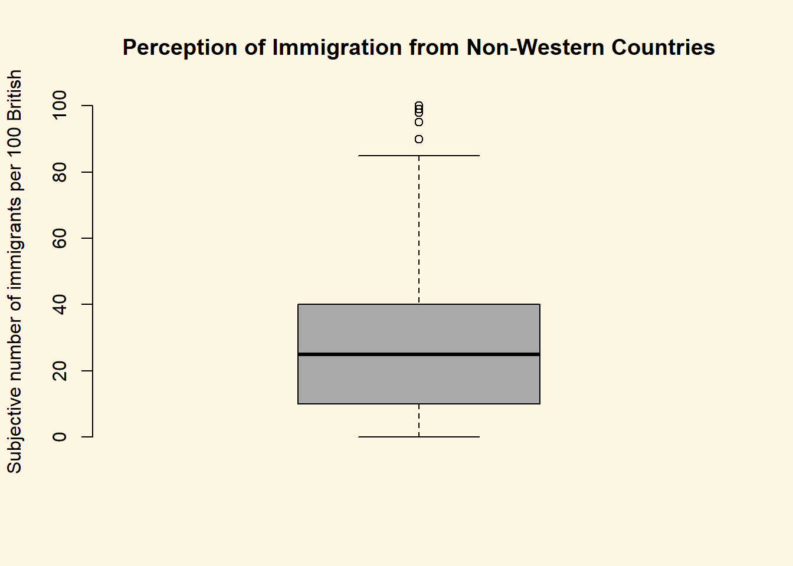
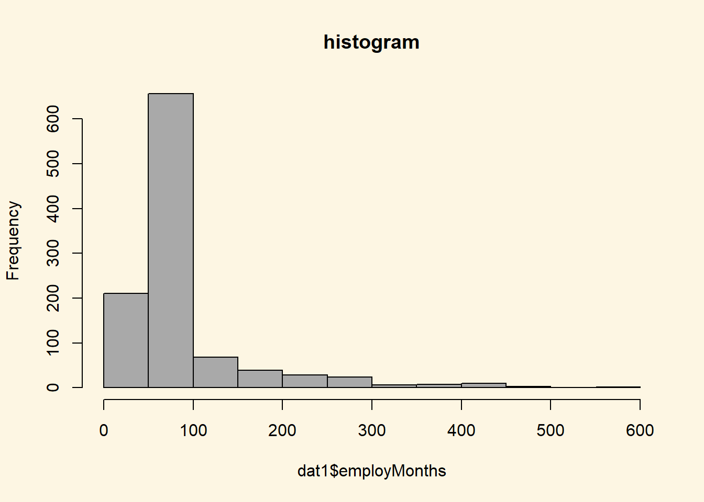
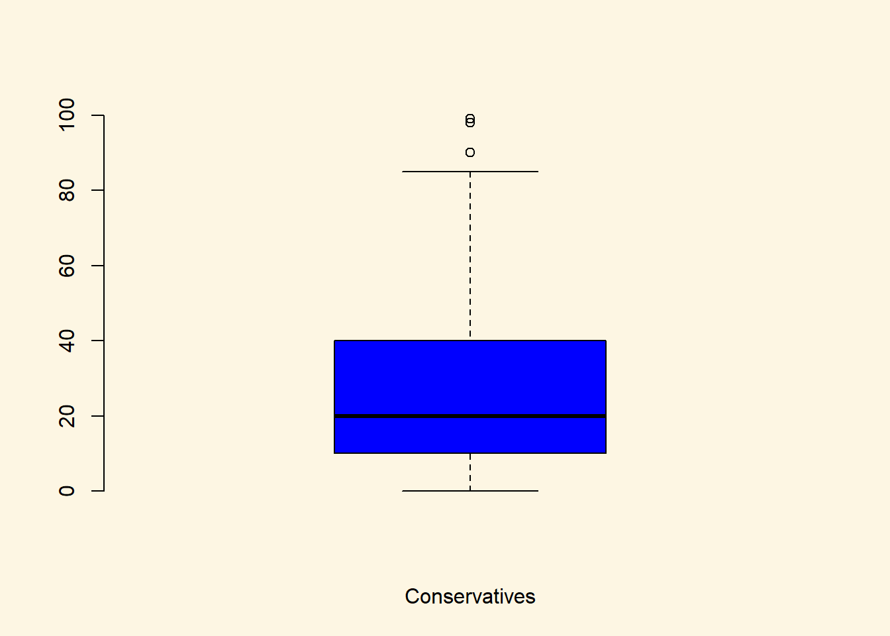
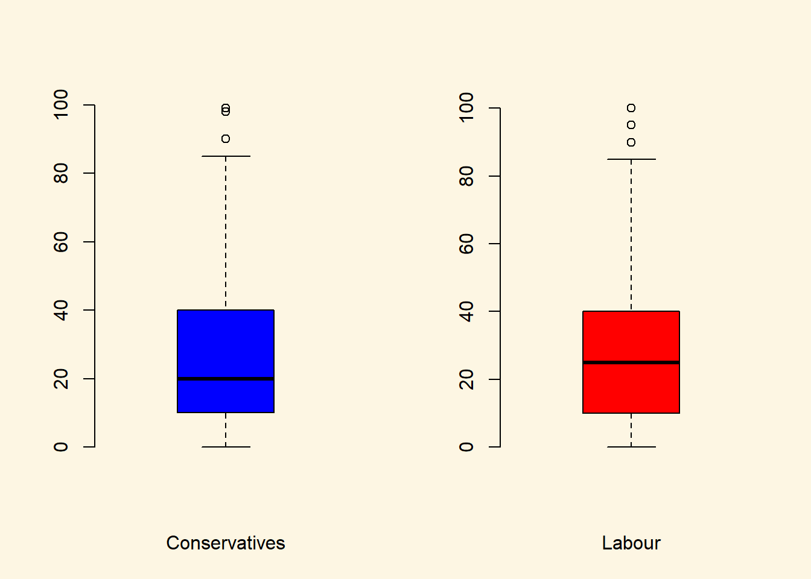
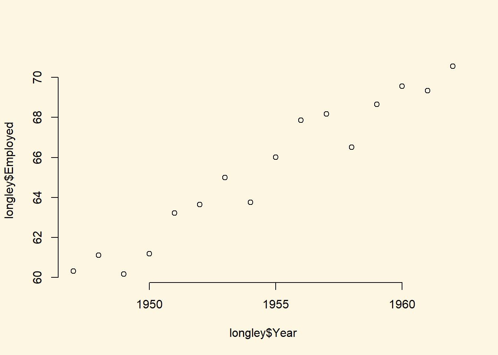
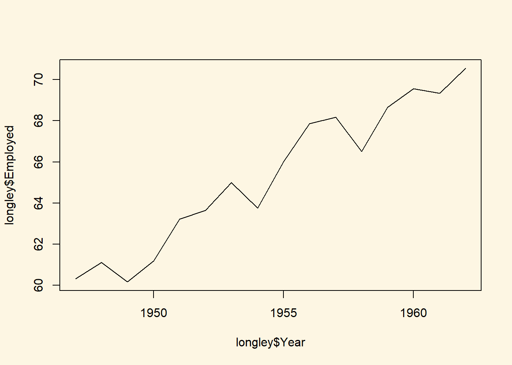
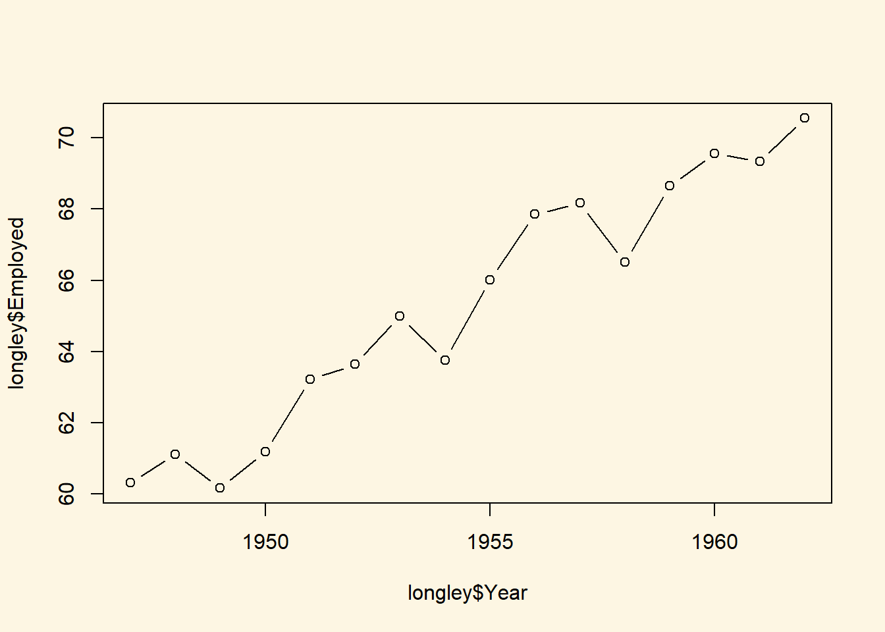

Chapter 7 Visualising data
7.1 Seminar
In this section, we will learn how to visualise data which is an important step towards understanding relationships better.
The non-western foreingers data is about the subjective perception of immigrants from non-western countries. The perception of immigrants from a context that is not similar to the one’s own ,is often used as a proxy for racism. Whether this is a fair measure or not is debatable but let’s examine the data from a survey carried out in Britain.
Let’s check the codebook of our data.
| Variable | Description |
|---|---|
| IMMBRIT | Out of every 100 people in Britain, how many do you think are immigrants from non-western countries? |
| over.estimate | 1 if estimate is higher than 10.7%. |
| RSex | 1 = male, 2 = female |
| RAge | Age of respondent |
| Househld | Number of people living in respondent’s household |
| party identification | 1 = Conservatives, 2 = Labour, 3 = SNP, 4 = Greens, 5 = Ukip, 6 = BNP, 7 = other |
| paper | Do you normally read any daily morning newspaper 3+ times/week? |
| WWWhourspW | How many hours WWW per week? |
| religious | Do you regard yourself as belonging to any particular religion? |
| employMonths | How many mnths w. present employer? |
| urban | Population density, 4 categories (highest density is 4, lowest is 1) |
| health.good | How is your health in general for someone of your age? (0: bad, 1: fair, 2: fairly good, 3: good) |
| HHInc | Income bands for household, high number = high HH income |
Let’s load the dataset.
We can look at the variable names in our data with the names() function.
The dim() function can be used to find out the dimensions of the dataset (dimension 1 = rows, dimension 2 = columns).
[1] 1049 13So, the dim() function tells us that we have data from 1049 respondents with 13 variables for each respondent.
Let’s take a quick peek at the first 10 observations to see what the dataset looks like. By default the head() function returns the first 6 rows, but let’s tell it to return the first 10 rows instead.
IMMBRIT over.estimate RSex RAge Househld paper WWWhourspW religious
1 1 0 1 50 2 0 1 0
2 50 1 2 18 3 0 4 0
3 50 1 2 60 1 0 1 0
4 15 1 2 77 2 1 2 1
5 20 1 2 67 1 0 1 1
6 30 1 1 30 4 1 14 0
7 60 1 2 56 2 0 5 1
8 7 0 1 49 1 1 8 0
9 30 1 1 40 4 0 3 1
10 2 0 1 61 3 1 0 1
employMonths urban health.good HHInc party_self
1 72 4 1 13 2
2 72 4 2 3 7
3 456 3 3 9 7
4 72 1 3 8 7
5 72 3 3 9 7
6 72 1 2 9 7
7 180 1 2 13 3
8 156 4 2 14 7
9 264 2 2 11 3
10 72 1 3 8 1Finally, let’s look at summary statistics of our dataset.
IMMBRIT over.estimate RSex RAge
Min. : 0.00 Min. :0.0000 Min. :1.000 Min. :17.00
1st Qu.: 10.00 1st Qu.:0.0000 1st Qu.:1.000 1st Qu.:36.00
Median : 25.00 Median :1.0000 Median :2.000 Median :49.00
Mean : 29.03 Mean :0.7235 Mean :1.544 Mean :49.75
3rd Qu.: 40.00 3rd Qu.:1.0000 3rd Qu.:2.000 3rd Qu.:62.00
Max. :100.00 Max. :1.0000 Max. :2.000 Max. :99.00
Househld paper WWWhourspW religious
Min. :1.000 Min. :0.0000 Min. : 0.000 Min. :0.0000
1st Qu.:1.000 1st Qu.:0.0000 1st Qu.: 0.000 1st Qu.:0.0000
Median :2.000 Median :0.0000 Median : 2.000 Median :0.0000
Mean :2.392 Mean :0.4538 Mean : 5.251 Mean :0.4929
3rd Qu.:3.000 3rd Qu.:1.0000 3rd Qu.: 7.000 3rd Qu.:1.0000
Max. :8.000 Max. :1.0000 Max. :100.000 Max. :1.0000
employMonths urban health.good HHInc
Min. : 1.00 Min. :1.000 Min. :0.000 Min. : 1.000
1st Qu.: 72.00 1st Qu.:2.000 1st Qu.:2.000 1st Qu.: 6.000
Median : 72.00 Median :3.000 Median :2.000 Median : 9.000
Mean : 86.56 Mean :2.568 Mean :2.044 Mean : 9.586
3rd Qu.: 72.00 3rd Qu.:3.000 3rd Qu.:3.000 3rd Qu.:13.000
Max. :600.00 Max. :4.000 Max. :3.000 Max. :17.000
party_self
Min. :1.000
1st Qu.:1.000
Median :2.000
Mean :3.825
3rd Qu.:7.000
Max. :7.000 7.1.1 Plots
We can visualize the data with the help of a boxplot, so let’s see how the perception of the number of immigrants is distributed.
# how good are we at guessing immigration
boxplot(
dat1$IMMBRIT,
main = "Perception of Immigration from Non-Western Countries",
ylab = "Subjective number of immigrants per 100 British",
frame.plot = FALSE, col = "darkgray"
)
Notice how the lower whisker is much shorter than the upper one. The distribution is right skewed. The right tail (higher values) is a lot longer. We can see this beter using a density plot. We combine R’s denisty() function with the plot() function.
plot(
density(dat1$IMMBRIT),
bty = "n",
lwd = 1.5,
main = "Perception of Immigration from Non-Western Countries",
xlab = "Subjective number of immigrants per 100 British"
)
We can also plot histograms using the hist() function.

It is plausible that perception of immigration from Non-Western countries is related to party affiliation. In our dataset, we have a some party affiliation dummies (binary variables). We can use square brackets to subset our data such that we produce a boxplot only for members of the Conservative Party. We first create the binary variables Cons and Lab for (Conservatives and Labour respectively) using the ifelse() function.
dat1$Cons <- ifelse(dat1$party_self == 1, yes = 1, no = 0)
dat1$Lab <- ifelse(dat1$party_self == 2, yes = 1, no = 0)We have a look at the variable Cons using the table() function first.
0 1
765 284 In our data, 284 respondents associate with the Conservative party and 765 do not. We create a boxplot of IMMBRIT but only for members of the Conservative Party. We do so by using the square brackets to subset our data.
# boxplot of immbrit for those observations where Cons is 1
boxplot(
dat1$IMMBRIT[dat1$Cons==1],
frame.plot = FALSE,
xlab = "Conservatives",
col = "blue"
)
We would now like to compare the distribution of the perception fo Conservatives to the distribution among Labour respondents. We can subset the data just like we did for the Conservative Party. In addtion, we want to plot the two plots next to each other, i.e., they should be in the same plot. We can achieve this with the par() function and the mfrow argument. This will spilt the plot window into rows and columns. We want 2 columns to plot 2 boxplots next to each other.
# split plot window into 1 row and 2 columns
par(mfrow = c(1,2))
# plot 1
boxplot(
dat1$IMMBRIT[dat1$Cons==1],
frame.plot = FALSE,
xlab = "Conservatives",
col = "blue"
)
# plot 2
boxplot(
dat1$IMMBRIT[dat1$Lab==1],
frame.plot = FALSE,
xlab = "Labour",
col = "red"
)
It is very hard to spot differences. The distributions are similar. The median for Labour respondents is larger which mean that the central Labour respondent over-estimates immigration more than the central Conservative respondent.
You can play around with the non-western foreigners data on your own time. We now turn to a dataset that is integrated in R already. It is called longley. Use the help() function to see what this dataset is about.
Let’s create a scatterplot with the Year variable on the x-axis and Employed on the y-axis.
plot(x = longley$Year, # x-axis variable
y = longley$Employed, # y-axis variable
bty = "n" # no box around the plot
)
To create a line plot instead, we use the same function with one additional argument type = "l".

Create a plot that includes both points and lines.
